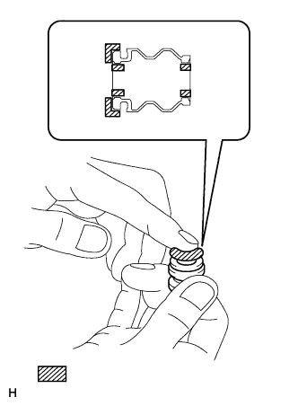
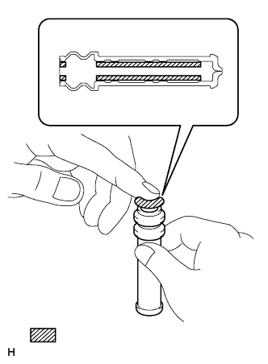

REAR BRAKE > INSTALLATION |
| 1. INSTALL REAR DISC |
Align the matchmarks and install the rear disc.
| 2. INSTALL REAR DISC BRAKE BUSH DUST BOOT |
|  |
Apply a light coat of lithium soap base glycol grease to the entire circumference of a new rear disc brake bush dust boot where it contacts the rear disc brake cylinder mounting, and the entire inner circumference of both ends.
 | lithium soap base glycol grease |
Install the rear disc brake bush dust boot to the rear disc brake cylinder mounting.
| 3. INSTALL REAR DISC BRAKE CYLINDER SLIDE BUSH |
|  |
Apply a light coat of lithium soap base glycol grease to a new rear disc brake cylinder slide bush.
| Lithium soap base glycol grease |
Install the rear disc brake cylinder slide bush to the rear disc brake cylinder mounting.
Apply a light coat of lithium soap base glycol grease to the cylinder slide pin, insert it into the rear disc brake cylinder slide bush in order to properly grease the parts, and then remove it.
| Lithium soap base glycol grease |
| 4. INSTALL REAR DISC BRAKE CYLINDER HOLE PLUG |
Apply a light coat of lithium soap base glycol grease to a new rear disc brake cylinder hole plug.
| Lithium soap base glycol grease |
Install the rear disc brake cylinder hole plug to the rear disc brake cylinder mounting.
| 5. INSTALL REAR DISC BRAKE CYLINDER MOUNTING LH |
Install the rear disc brake cylinder mounting and 2 plate washers with the 2 bolts.
| 6. INSTALL REAR NO. 1 DISC BRAKE PAD SUPPORT PLATE |
Install the 2 rear No. 1 disc brake pad support plates to the rear disc brake cylinder mounting.
| 7. INSTALL REAR NO. 2 DISC BRAKE PAD SUPPORT PLATE |
Install the 2 rear No. 2 disc brake pad support plates to the rear disc brake cylinder mounting.
| 8. INSTALL REAR DISC BRAKE PAD WEAR INDICATOR PLATE |
Install the rear disc brake pad wear indicator plate to the inner side disc brake pad.
| 9. INSTALL REAR DISC BRAKE ANTI-SQUEAL SHIM |
Install the rear disc brake anti-squeal shims on each rear disc brake pad.
| 10. INSTALL REAR DISC BRAKE PAD |
Install the 2 rear disc brake pads together with the rear disc brake anti-squeal shims to the rear disc brake cylinder mounting.
| 11. INSTALL REAR DISC BRAKE CYLINDER ASSEMBLY LH |
 |
Apply a light coat of lithium soap base glycol grease to the sliding surfaces of the rear disc brake cylinder slide pins.
| Lithium soap base glycol grease |
Install the rear disc brake cylinder with the 2 rear disc brake cylinder slide pins.
| 12. CONNECT REAR FLEXIBLE HOSE LH |
Connect the rear flexible hose to the rear disc brake cylinder with the union bolt and a new gasket.
| 13. BLEED BRAKE LINE |
Turn the engine switch on (IG).
Remove the brake master cylinder reservoir filler cap assembly.
Add brake fluid until the fluid level is between the MIN and MAX lines of the reservoir.
Repeatedly depress the brake pedal and bleed air from the bleeder plug of the front disc brake cylinder RH.
Repeat the step above until the air is completely bled, and then tighten the bleeder plug while depressing the brake pedal.
Bleed the air from the bleeder plug of the front disc brake cylinder LH using the same procedure as for the RH side.
With the brake pedal depressed, loosen the bleeder plug of the rear disc brake cylinder RH, continue to hold the brake pedal and allow brake fluid to be drained from the bleeder plug while the pump motor operates.
When there is no more air in the brake fluid, tighten the bleeder plug, and then release the brake pedal.
Bleed the air from the bleeder plug of the rear disc brake cylinder LH using the same procedure as for the RH side.
Turn the engine switch off.
Inspect for brake fluid leaks.
Check and adjust the brake fluid level (Click here).
Clear the DTCs (Click here).
| 14. INSTALL REAR WHEEL |